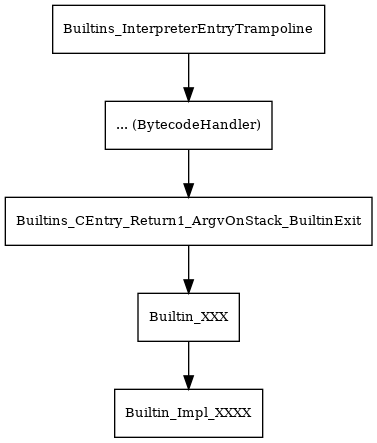
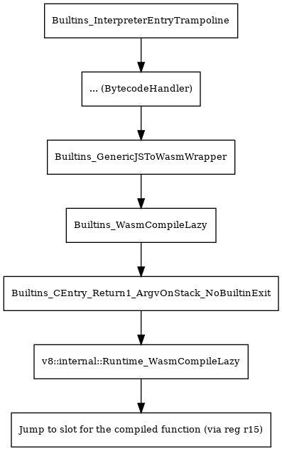

V8 FAQ
Table of Contents
1. How to inject a global object ?
where: src/bootstrapper.cc
2. How to provide a new builtins to V8 ?
- Create builtin function and declare in builtins-definitions.h
// ES6 section 24.3.2 JSON.stringify.
BUILTIN(JsonStringify) {
HandleScope scope(isolate);
Handle<Object> object = args.atOrUndefined(isolate, 1);
Handle<Object> replacer = args.atOrUndefined(isolate, 2);
Handle<Object> indent = args.atOrUndefined(isolate, 3);
RETURN_RESULT_OR_FAILURE(isolate,
JsonStringify(isolate, object, replacer, indent));
}
Attach to an object in bootstrapper.cc
{ // -- J S O N Handle<JSObject> json_object = factory->NewJSObject(isolate_->object_function(), AllocationType::kOld); JSObject::AddProperty(isolate_, global, "JSON", json_object, DONT_ENUM); SimpleInstallFunction(isolate_, json_object, "parse", Builtin::kJsonParse, 2, false); SimpleInstallFunction(isolate_, json_object, "stringify", Builtin::kJsonStringify, 3, true); InstallToStringTag(isolate_, json_object, "JSON"); }
3. Why exists performance gab between Builtins and JS-TO-WASM Calls ?
Call paths of these two types of calls are same before enter into ignition so ignore. Path in IGNITION to call builtins should look like as follow:

Wasm as follows:

After step into source codes, we find nothing probaly to make big impact to performance except for BuiltinsGenericJSToWasmWrapper.
4. Why –print-bytecode lost constant pool information
A: build with compil-time parameter, v8enableobjectprint=true.